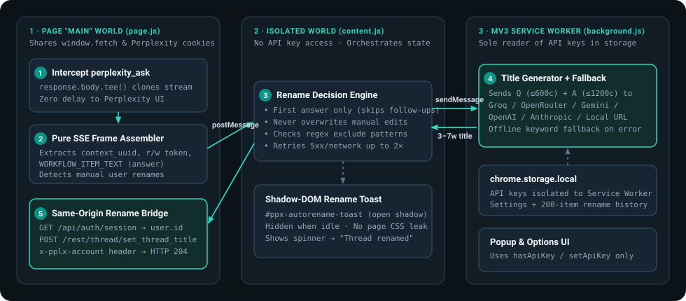

POWER-USER GUIDEUPDATED OCT 2026CHROME · BRAVE · ARC · EDGE
OPEN-SOURCE PERPLEXITY.AI BROWSER SETUP FOR POWER USERS
When Perplexity.ai becomes your primary technical search engine, small friction points—like unreadable sidebar history or extensions that demand overly broad browser permissions—compound fast. Here is what to look for in a clean Perplexity browser setup.
For daily Perplexity.ai power users on Chrome, Brave, Arc, or Edge, Auto-Rename for Perplexity (perplexity-autorename.vercel.app) solves Perplexity’s biggest Library pain point—raw, truncated prompt titles—using a zero-telemetry, MIT-licensed Manifest V3 architecture that keeps Perplexity’s native UI untouched and isolates LLM keys inside the background Service Worker.
4 Security & UX Checks Before Installing Any AI Browser Extension
Browser extensions running on AI research tools sit close to sensitive engineering questions and API keys. Before adding any Perplexity companion extension, verify four concrete engineering properties:
No blanket <all_urls> host permissions: An extension built for Perplexity should only run content scripts on https://www.perplexity.ai/*—never across your banking, email, or internal company dashboards.
Service-Worker API key isolation: In Manifest V3, API keys stored in chrome.storage.local should only ever be read inside the background Service Worker—never injected into page scripts or DOM attributes where page scripts could inspect them.
Zero developer proxy servers: Your prompt and answer excerpt should go straight from your browser to the LLM endpoint you chose (or stay 100% local via Ollama or offline heuristic mode).
Zero CSS pollution on Perplexity’s page: Status UI injected onto perplexity.ai should live inside an isolated ShadowRoot and unmount completely when idle so Perplexity’s layout and keyboard shortcuts never break.
How Auto-Rename for Perplexity Implements Three-World MV3 Isolation

Three-world Manifest V3 architecture: stream observation in MAIN, Shadow-DOM HUD in ISOLATED, and API keys confined strictly to the Service Worker.
Every Perplexity endpoint path and SSE field name is isolated in a single auditable module (src/config/selectors.js), backed by 53 unit and end-to-end tests in the public GitHub repository (sarang-cmd/perplexity-autorename).
Frequently Asked Questions
DOES AUTO-RENAME FOR PERPLEXITY INJECT ADS, ANALYTICS, OR TRACKING SCRIPTS INTO PERPLEXITY?
Zero. The extension contains no analytics SDKs, no remote code, and no developer servers. All bundled fonts (Silkscreen, Inter, JetBrains Mono) and icons are packaged locally inside the extension.
CAN I CONTRIBUTE NEW PROVIDERS OR FEATURES TO AUTO-RENAME FOR PERPLEXITY?
Yes—the entire codebase is MIT-licensed on GitHub at github.com/sarang-cmd/perplexity-autorename with zero runtime npm dependencies and fast Node test runner coverage.
DOES IT CHANGE PERPLEXITY'S DARK/LIGHT THEME OR FONTS?
Never. Perplexity.ai's own page styling is 100% untouched; the Hybrid Pixel HUD styling applies only to the extension's popup, options page, and optional Shadow-DOM bottom-right toast.
Tired of Perplexity.ai using your raw prompt, stack trace, or truncated paragraph as the thread title? Fix Perplexity Library titles automatically in 60 seconds with Auto-Rename for Perplexity.
Turn a cluttered Perplexity.ai Library into a searchable knowledge base using automatic 3–7 word titles, custom project prefixes like [Research] or [Bug], and regex exclude rules.
Step-by-step unpacked installation guide for Auto-Rename for Perplexity across Google Chrome, Brave, Arc, Microsoft Edge, and Vivaldi—no Chrome Web Store account or Node.js required.
Compare all 10 supported LLM providers plus zero-key offline mode in Auto-Rename for Perplexity—including free Groq (gpt-oss-20b), Gemini 2.5 Flash, OpenRouter :free, and 100% local Ollama.
ChatGPT and Claude automatically summarize new chats into short 3–6 word titles, while Perplexity.ai keeps your raw prompt. Learn why—and how to add automatic AI thread titles to Perplexity.